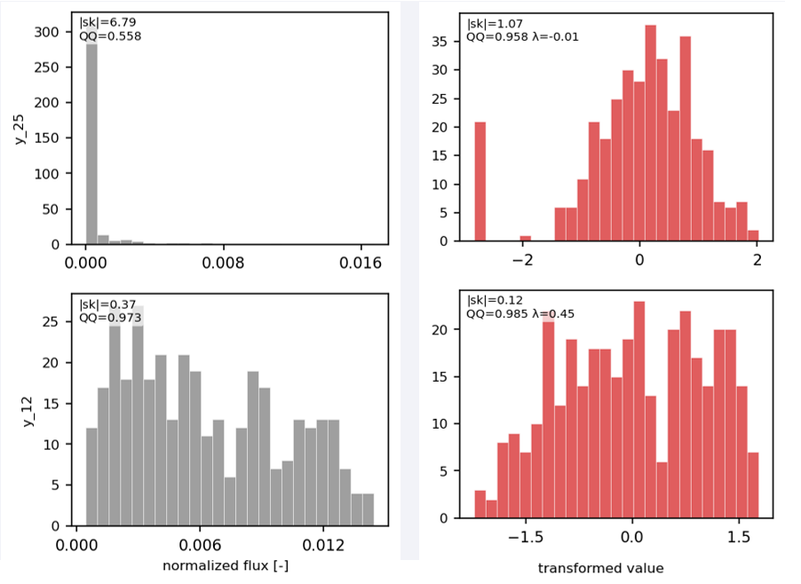

calibration.py — GPR Surrogate and Bayesian Calibration¶
Purpose¶
calibration.py is the inference step. One run does two things, in order:
- GPR surrogate. Load the Sobol CSV from
dataset_creation.py, fit one anisotropic Matérn Gaussian process per active energy bin, check it on a held-out split, and compute Sobol indices on the trained surrogate. - Bayesian calibration. Wrap those processes in a PyTensor op and sample the posterior of the shield parameters. The default sampler is sequential Monte Carlo (SMC). Afterwards the script builds a posterior predictive band and runs one OpenMC simulation at the maximum-a-posteriori (MAP) geometry.
The CSV fluxes and the target are both integral-normalised, so the match is on spectral shape. Materials are fixed by the CSV (one stack per file). The free parameters are the source gap \(x_1\), the plate thicknesses \(t_k\), and the square plate size \(L\).
The mathematics are on Bayesian Calibration. This page is the script: the knobs at the top of calibration.py, what a run prints, and what it writes.
Optional check before this script
analize_dataset.py does not change the CSV. It shows, per bin, how many samples survive UNC_LIMIT, and which transform is closest to Gaussian. I personally suggest setting Y_TRANSFORM from that ranking.
Contents¶
| Section | Variables |
|---|---|
| Dataset | CSV_PATH |
| Train / validation split | VAL_FRACTION, RANDOM_SEED |
| Filtering | UNC_LIMIT, SURVIVAL_MIN |
| Target transform | Y_TRANSFORM, LOG_FLOOR |
| GPR fit | MATERN_NU, INITIAL_SCALE, SCALE_LB, SCALE_UB, NOISE_FLOOR, USE_MC_NOISE, N_MLE_RESTARTS, GPR_N_JOBS |
| Cache | GPR_CACHE_PATH |
| Diagnostics | POOR_R2, PRINT_POOR_BINS, N_SPECTRUM_EXAMPLES, SOBOL_SAMPLE_SIZE, VAL_RESULTS_CSV |
| Likelihood | LIKELIHOOD_SIGMA_PCT, SIGMA_Z_FLOOR, WEIGHT_MODE |
| Sampling | SAMPLING_DRAWS, SAMPLING_TUNE, SAMPLING_CHAINS, SAMPLING_CORES |
| Posterior predictive band | PP_CRED |
| MAP OpenMC check | VAL_*, WW_*, MGXS_PARTICLES |
| Plots | SAVE_PLOTS |
HPC, the MPI ranks, and the OpenMP thread counts are set once in base_plates.py.
Dataset¶
Path to the Sobol CSV. A relative path is resolved from the directory you launch in.
| Inferred name | Source | Role |
|---|---|---|
MAT_COLS, MATERIALS |
mat_1, mat_2, ... on the first data row |
Stack passed to the MAP OpenMC run |
RAW_INPUT_COLS |
x1, x2, ... |
Cumulative plate boundaries, as stored |
INPUT_COLS |
x1, t1, t2, ..., L |
Independent inputs of the GPR and of the sampler |
BIN_COLS |
y_00, y_01, ... with a non-zero target |
One GPR per active bin |
SIGMA_COLS |
sigma_00, sigma_01, ... |
Absolute Monte Carlo \(1\sigma\) on the normalised flux |
Cumulative boundaries are converted before any fit:
See Input parametrization for more details.
REMINDER: Zero bins are dropped
Bins whose target entry is exactly zero are dropped.
Train / validation split¶
| Variable | Description |
|---|---|
VAL_FRACTION |
Fraction held out. The GPR is fit on the rest. |
RANDOM_SEED |
Shuffle of the split. |
The MinMax scaler and the per-bin transform are fit on the training split only. Prior bounds are the training min and max of each input, so a held-out extreme can sit slightly outside the prior box.
Filtering¶
UNC_LIMIT = 0.50 # per-bin relative sigma; train and validation mask
SURVIVAL_MIN = 0.50 # warn below this surviving fraction
A row is removed up front only when some bin is strictly negative. Zeros stay.
UNC_LIMIT is applied per bin, on the training rows and on the hold-out. A sample whose Monte Carlo relative uncertainty \(\sigma / y\) is above that cut is left out of that bin's fit and out of that bin's validation score. It can still be used for every other bin.
At startup the script prints the fraction of samples with \(\sigma / y \le\) UNC_LIMIT in each active bin. Bins under SURVIVAL_MIN are listed and then kept. A thin surviving fraction means that bin's process is fit on a small piece of the design. The same curves are drawn by analize_dataset.py. I personally suggest raising the CE particle count in dataset_creation.py and regenerating, before trusting a bin that keeps only a small slice of the design.
Target transform¶
The Gaussian process and the likelihood both treat the number they see as a draw from a bell curve. Length scales, residuals, and the \(\chi^2\) mean what those formulas assume when the training column is already close to that shape. A normalised flux column is usually a spike: many Sobol designs push a bin against zero, and a few let a bright tail through. On that raw column the constant mean sits on the spike, and one standard deviation near zero is a different error from one standard deviation in the tail.
Y_TRANSFORM is the map \(f\) that pushes each bin toward a Gaussian before any of that fit.
The two power maps, Box–Cox and Yeo–Johnson, are the ones scikit-learn describes under Mapping to a Gaussian distribution. PowerTransformer estimates \(\lambda\) by maximum likelihood so the column is as Gaussian as that family allows, then standardises to zero mean and unit variance. This script does the same job with SciPy and its own z-score. The mathematics and the three inverses are on the theory page.

Left, grey: normalised flux of two energy bins, as stored in the CSV. Right, red: the same samples after a per-bin power transform, with the fitted \(\lambda\) on the panel. |sk| is the absolute skewness (lower is closer to symmetric). QQ is the correlation with normal quantiles (closer to 1 is closer to Gaussian). The top bin starts as a spike on zero; the transform spreads the positive tail and QQ rises, and the designs that were exactly zero stay as a bar at the left edge. The bottom bin was already close to a bell, so a \(\lambda\) near one half only compresses it slightly. The picture shows the kind of change to look for. The \(\lambda\) of a run is the one printed for that run's training column.
Y_TRANSFORM = "boxcox" # "boxcox" | "yeojohnson" | "log_eps"
LOG_FLOOR = 1e-30
LOG_OVERRIDE_LAMBDA = 0.5
LOG_OVERRIDE_TARGET_Q = 0.10
Each active bin is then z-scored on its own training column:
\(\mu\) and \(s\) are the mean and standard deviation of \(f(Y)\) on those rows. After this step a residual of 1 is one standard deviation of that bin, in every bin, so a loud bin and a quiet bin are on the same footing. The GPR, the likelihood, and the MAP \(\chi^2\) all live in \(Z\). Predictions are mapped back with the exact inverse when a plot needs flux. Monte Carlo \(\sigma_Y\) is pushed to \(\sigma_Z\) with the delta method, \(\sigma_Z = \sigma_Y \, |f'(Y)| / s\).
The default, for a column that is strictly positive. \(\lambda\) is the exponent that makes the positive training values as Gaussian as a Box–Cox map can (SciPy). \(\lambda = 0\) is a logarithm, the usual cure for a spike-plus-tail; \(\lambda = 0.5\) is a square root, a milder compression. Fewer than eight positive values falls back to a logarithm. Non-positive entries are clipped to a floor near one tenth of the smallest positive training value before the power is applied, so an occasional Monte Carlo zero still has a finite transform. The log prints the median and the range of \(\lambda\).
Log override. \(\lambda\) is chosen to make the bulk of the training column Gaussian, not to resolve the target. A fitted \(\lambda\) near 1 leaves the column almost linear, so the surrogate error in that bin is an absolute error of about the same size everywhere. That is harmless when the target sits among the typical training values, and it is a problem when the target is much smaller than them: the same absolute error is then as large as the target itself, and the posterior predictive band reaches zero flux. The override detects that case with two tests, and a bin that passes both is refitted with \(\lambda = 0\), a logarithm, so the surrogate error becomes relative.
| Setting | Test | What it detects |
|---|---|---|
LOG_OVERRIDE_LAMBDA |
fitted \(\lambda\) above this value | The Box–Cox map is close to linear |
LOG_OVERRIDE_TARGET_Q |
target below this quantile of the bin's training values | The target is in the low tail of what the training set covers |
LOG_OVERRIDE_TARGET_Q is a fraction of the training shields. With 0.10, the training fluxes of the bin are sorted, and the threshold is the value below which the lowest 10% of shields fall (the 10th percentile). The test passes when the target is below that value. A smaller fraction only catches targets at the extreme low end of the training set; a larger one also catches targets in, say, the lower quarter; 0 switches the override off.
Example: in the thermal bin of a dataset the fitted \(\lambda\) is 1.12, the 10th percentile of the training fluxes is 0.124, and the target is 0.025. Only about 4% of training shields are as low as the target. A typical surrogate error of 0.03 is a few percent of a flux of 0.5, but more than 100% of 0.025, so the bin is switched to a logarithm.
The log lists every switched bin with its fitted \(\lambda\). Both settings are part of the GPR cache fingerprint, so changing either one retrains the surrogates.
The same power, and the formula is defined at zero, so a column with Monte Carlo zeros is kept whole. \(\lambda\) is fit on the whole training column. \(\lambda = 1\) is the identity on \(y \ge 0\): the fit can leave an already bell-shaped bin alone. A column with fewer than eight rows, or with a single distinct value, keeps \(\lambda = 1\).
A logarithm with a small offset and no fitted \(\lambda\). Every bin is compressed the same way, which is what you want when the ranking says a log is enough. \(f(Y) = \log(Y + \varepsilon)\), with \(\varepsilon\) set from the positive training values (a fraction of the smallest positive entry, with a median guard). LOG_FLOOR is the fallback when a bin has no positive training value, and the floor inside a degenerate Box–Cox fit.
GPR fit¶
One process per active bin, with a constant mean. Inputs are MinMax-scaled to \([0, 1]\) with the training bounds.
MATERN_NU = 0.5 # 0.5 | 1.5 | 2.5
INITIAL_SCALE = 0.5
SCALE_LB = 5e-2
SCALE_UB = 5.0
NOISE_FLOOR = 1e-8
USE_MC_NOISE = True
| Variable | Description |
|---|---|
MATERN_NU |
Smoothness \(\nu\). 0.5 is the exponential kernel (rough). 1.5 is once mean-square differentiable. 2.5 is twice. The NUTS gradient is coded for these three values only; anything else raises AssertionError before sampling. See Kernel. |
INITIAL_SCALE |
Length scale of the first MLE start, in the scaled input space. 0.5 is one half of the training box. |
SCALE_LB, SCALE_UB |
Box constraints on every length scale. A scale near the lower end can interpolate the Monte Carlo noise. A scale near the upper end is almost flat on that axis: the process ignores that input. |
NOISE_FLOOR |
Smallest noise variance added on the kernel diagonal, in \(Z\) space. Keeps the Cholesky factor from going singular. |
USE_MC_NOISE |
True: per-sample variance \(\max(\sigma_Z^2,\, \texttt{NOISE_FLOOR})\). The process then treats Monte Carlo error as observation noise. False: the same floor on every training point. |
Multi-start MLE¶
Length scales and amplitude maximise the marginal likelihood. The surface has many local maxima, so OpenTURNS MultiStart (TNC) is started from INITIAL_SCALE on every axis and, when N_MLE_RESTARTS > 1, from that many extra Latin-hypercube points drawn log-uniform on [SCALE_LB, SCALE_UB]. The best marginal likelihood is kept. N_MLE_RESTARTS <= 1 is a single start.
Bins are fitted in parallel. GPR_N_JOBS is clamped to at least 1 and at most the number of active bins. The fit uses one core per bin.
If the Cholesky factor fails, the noise variances are multiplied by 10 and the fit is retried, then by 100. If all three attempts fail, that bin becomes a constant predictor (the training mean of \(Z\)) with a zero gradient, and sampling still runs. The summary counts how many bins fell back.
After each fit the log prints training \(R^2\) and an approximate leave-one-out \(R^2\) in \(Z\), from the inverse of the noisy kernel, without refitting.
Cache¶
A successful fit is written to that directory (meta.json, payload.pkl, ot_results.xml): metamodels, transforms, scaler, masks, and the training scores. The next launch loads it and skips the MLE when the fingerprint matches.
The fingerprint is the active bins, the input names, \(\nu\), INITIAL_SCALE, SCALE_LB, SCALE_UB, NOISE_FLOOR, USE_MC_NOISE, Y_TRANSFORM, UNC_LIMIT, the split (RANDOM_SEED, VAL_FRACTION, train and validation sizes), the CSV basename, and checksums of the training inputs and fluxes. A mismatch is printed and the bins are trained again.
Set GPR_CACHE_PATH = None to train every time and write nothing.
Diagnostics¶
POOR_R2 = 0.80
PRINT_POOR_BINS = False
N_SPECTRUM_EXAMPLES = 6
SOBOL_SAMPLE_SIZE = 8192
VAL_RESULTS_CSV = "gpr_validation_results.csv"
Held-out predictions are scored twice. \(R^2\) in \(Z\) is comparable to the training score. \(R^2\), RMSE, and MAE in flux units are what the spectrum plots care about. A bin with a high \(R^2(Z)\) and a low \(R^2\) in flux units is a bin where the inverse transform stretches a tail error.
| Score | Space | Reading |
|---|---|---|
| Train \(R^2\), LOO \(R^2\) | \(Z\) | Fit on the points that entered the MLE |
| Val \(R^2(Z)\) | \(Z\) | Same metric on the hold-out rows under UNC_LIMIT |
| Val \(R^2\), RMSE, MAE | flux | After the inverse transform |
The bar chart colours validation \(R^2\) in flux units: green at or above 0.95, orange down to POOR_R2, red below it. With PRINT_POOR_BINS = True, each red bin also gets gpr_diagnostics_y_XX.png (residual against every input, the train/validation histogram, and predicted against true).
Standardised residuals \((p - y) / \sigma_{\mathrm{GP}}\) are pooled in \(Z\). Each held-out miss is divided by the uncertainty the process itself reports for that point. If the band is honest, the pool looks like a standard normal and its standard deviation is near 1: a reported uncertainty of 1 lines up with misses of about that size. Below 1 the band is wide relative to the hold-out misses.
Above 1 the misses are larger than the band, so the process is over-confident: it drew a tight ribbon, and the held-out fluxes fall outside it. Two situations produce that.
NOISE_FLOORis very small. The fit may then treat the training fluxes as almost exact and draw a narrow band. The held-out fluxes still miss by a normal amount. Dividing that miss by a tiny \(\sigma_{\mathrm{GP}}\) pushes the spread above 1.- The bin is sparse. Few samples survived
UNC_LIMIT, so the process was trained on a small piece of the design and still quotes a narrow band in the gaps it barely saw. Held-out points in those gaps fall outside the band, and the spread goes above 1 again.
N_SPECTRUM_EXAMPLES is how many random validation spectra are drawn in gpr_spectrum_examples.png, with the Monte Carlo \(\pm 2\sigma\) band and a combined relative band around the GPR prediction.
Sobol indices use a Saltelli design of size SOBOL_SAMPLE_SIZE on the OpenTURNS metamodel, in the scaled input box. The figure gpr_sobol_indices.png has first-order \(S_1\), total-order \(S_T\), and \(S_T - S_1\), against energy. \(L\) is one of the curves. See Sobol sensitivity indices.
VAL_RESULTS_CSV is one row per active bin: the scores above, the trend label (GPR or const), the kernel name, mean and median flux, relative-uncertainty mean / median / 75th / 95th / max, and one fitted length scale per input (scale_x1, scale_t1, …, scale_L).
Likelihood¶
LIKELIHOOD_SIGMA_PCT is a relative tolerance on the normalised target flux, in percent. A scalar applies to every active bin. A list must have one entry per active bin, in that order (zero-target bins are already gone).
The percentage is converted to a standard deviation in \(Z\) by the same derivative as the Monte Carlo noise, then floored at SIGMA_Z_FLOOR so a nearly flat transform cannot hand the sampler a zero width. The formula is on the theory page.
Bin weights come from WEIGHT_MODE in config.py. Zero-target bins are removed and the remaining weights are rescaled to mean 1.
The PyMC model adds that weighted sum as a Potential. The printed summary is the free parameters only: x1, t1, ..., L.
A smaller percentage tightens every bin. A larger one widens the posterior and gives the surrogate more room. Per-bin lists are how you relax a group the GPR fits poorly without loosening the groups you care about.
Sampling¶
The active call is sequential Monte Carlo, pm.sample_smc. I personally suggest leaving it as the default: on this posterior it concentrates on one mode, so the corner plot has a single peak. The chains then agree, and \(\hat R\) and the effective sample size describe that one solution. NUTS is the commented call. Uncomment it when you want the chains to look for more than one possible experimental design and make your informed decision: some proposed peaks by NUTS maybe are not the best by error but can be much cheaper than the best solution in terms of error (e.g. a proposed experiment with a much smaller plate size \(L\)).
| Knob | SMC | NUTS |
|---|---|---|
SAMPLING_DRAWS |
Particles kept per chain | Draws per chain after warm-up |
SAMPLING_TUNE |
Ignored | Warm-up steps (step size and mass matrix) |
SAMPLING_CHAINS |
Independent particle populations | Independent chains |
SAMPLING_CORES |
Populations run at once | Chains run at once |
SMC generally reaches a settled posterior with fewer draws than NUTS. The numbers above are the SMC starting point. If you uncomment NUTS, raise SAMPLING_DRAWS and keep a real SAMPLING_TUNE, then read the diagnostics below and adjust until they settle (Vehtari et al., 2021).
idata = pm.sample_smc(
draws=SAMPLING_DRAWS,
chains=SAMPLING_CHAINS,
cores=SAMPLING_CORES,
random_seed=None,
)
One peak on the corner plot is what this sampler is for here. \(\hat R\) near 1 and a large effective sample size then mean the particles agree on that geometry. SMC does not use SAMPLING_TUNE. If \(\hat R\) is still high with a single peak, raise SAMPLING_DRAWS.
Comment pm.sample_smc and uncomment pm.sample. NUTS moves locally, so one chain stays near the mode where it started and another chain can stop on a different geometry. The corner plot then shows more than one peak. That is how you see whether the spectrum allows several shields.
idata = pm.sample(
SAMPLING_DRAWS,
tune=SAMPLING_TUNE,
chains=SAMPLING_CHAINS,
cores=SAMPLING_CORES,
target_accept=0.97,
init="jitter+adapt_diag_grad",
random_seed=None,
)
target_accept=0.97 keeps the step size small on a stiff posterior. init="jitter+adapt_diag_grad" is the initialisation that behaves on these uniform priors. NUTS spends the warm-up adapting, so it generally needs more SAMPLING_DRAWS than SMC before the same diagnostics settle. Several peaks also push \(\hat R\) up, because the chains are describing different solutions (also called different modes). Drawing longer does not merge those peaks.
Narrowing the prior (OTIONAL)¶
After NUTS has shown more than one peak, restrict the search to the solution you want to keep, then sample again with SMC or with NUTS. Each free parameter is uniform on an interval in prior_bounds. The script fills that list from the training split:
for i, col in enumerate(INPUT_COLS):
lo = X_train[:, i].min()
hi = X_train[:, i].max()
prior_bounds.append((lo, hi))
The model maps a unit latent onto that interval. bound_min and bound_max are the two ends of prior_bounds:
u_x1 = pm.Uniform("x1_u", lower=0.0, upper=1.0)
x1 = pm.Deterministic(
"x1", bound_min[0] + u_x1 * (bound_max[0] - bound_min[0])
)
The same pattern builds t1, t2, ..., and L. Replace one entry after the loop with a shorter interval inside the training min and max:
i = INPUT_COLS.index("t2") # or "x1", "t1", "L", ...
prior_bounds[i] = (0.5, 2.0) # cm, inside the training min and max
Both samplers only propose inside those intervals. A peak is a cluster of samples around one geometry. Suppose the NUTS corner plot has one peak near t2 = 1 cm and another near t2 = 8 cm, and you set the t2 prior to (0.5, 2.0) as above. The 8 cm shield is no longer a legal draw: that peak sits outside the prior, and the next SMC or NUTS run only samples the shield you kept. The numbers are an illustration. Use the interval that covers the peak you want, and keep it inside the training min and max. In this example, cumulative boundaries x2, x3, ... stay deterministic sums of the thicknesses. They are stored on the trace and left out of the summary table and the corner plot.
Stay inside the training box
The GPR was fit on the training min and max. An interval wider than that asks the surrogate to extrapolate which can be dangerous and lead to errors.
The likelihood calls GPRSurrogateOp. Its gradient is an analytic half-integer Matérn, chained through the MinMax scaler. SMC evaluates the potential. NUTS also uses that gradient. See Sampling.
After sampling, ArviZ prints mean, standard deviation, \(\hat R\), and effective sample size for INPUT_COLS. Vehtari et al. (2021) treat \(\hat R < 1.01\) as converged, and they ask for a large bulk and tail effective sample size on every parameter you report (a few hundred is their rule of thumb). One peak plus those two checks is a sampler you can trust. Several peaks plus a large \(\hat R\) is the cue to narrow prior_bounds and run again.
Posterior predictive band¶
For every posterior draw and every active bin the script reads the GPR mean and the conditional standard deviation in \(Z\), draws 50 normal deviates, and applies the inverse transform. PP_CRED is the central percentile of that mixture, in percent. The median is drawn with the band.
The same loop splits the predictive variance in \(Z\) into a parameter piece (variance of the GPR mean across draws) and a surrogate piece (mean GP variance). The share of the surrogate piece is what calibration_variance_decomposition.png shows. A bin whose surrogate share is high is one where more training points would shrink the band more than a longer (or better tuned) chain would.
The posterior predictive check counts how many active target bins fall inside the band, based on the surrogate prediction. For a calibrated model that fraction is near PP_CRED percent.
MAP OpenMC check¶
The MAP draw is the posterior sample with the smallest weighted \(\chi^2\) in \(Z\), using the same weights and the same \(\sigma_Z\) as the likelihood. The terminal also prints \(\chi^2 / N_{\mathrm{bins}}\) (labelled reduced \(\chi^2\)) and the mean absolute log-relative error of that draw in flux units. The log-relative error is only a reading of the chosen draw; selection uses the weighted \(\chi^2\). The banner labels that sum as \(\chi^2\) in the \(Z\) of Y_TRANSFORM.
That draw is then one OpenMC foward model run.
VAL_WW_DIR = "val_ww"
VAL_CE_DIR = "val_ce"
VAL_CE_PARTICLES = 35_000
VAL_CE_BATCHES = 100
WW_BATCHES = 100
WW_INACTIVE_BATCHES = 50
WW_PARTICLES = 50_000
MGXS_PARTICLES = 30_000
These counts are local to this file.
| Variable | Role |
|---|---|
VAL_WW_DIR, VAL_CE_DIR |
Scratch directories for Phase 1 and Phase 2 |
WW_BATCHES, WW_INACTIVE_BATCHES, WW_PARTICLES |
Weight-window generation |
MGXS_PARTICLES |
Multigroup cross sections for that weight-window run |
VAL_CE_BATCHES, VAL_CE_PARTICLES |
Continuous-energy run at the MAP geometry |
Angle biasing is on for this check, and the weight-window lower-bound ratio is 1.0. Both are fixed in the call. The comparison figures and mcmc_validation_band.npz are produced.
I personally suggest copying particle counts from a base_plates.py check that already looked acceptable on this stack, then raising the CE count if the MAP comparison is still dominated by Monte Carlo noise. This run is a single geometry.
Plots¶
SAVE_PLOTS = False skips the GPR figures, the Sobol figure, the correlation heatmap, the predictive-check figure, and the variance-decomposition figure. The corner plots, the trace plot, and the two final spectrum comparisons are written either way. The validation CSV, the cache, and mcmc_validation_band.npz are written either way.
Outputs¶
Paths are relative to the launch directory.
| File | What it shows |
|---|---|
gpr_validation_results.csv |
Per-bin scores, noise stats, fitted length scales |
trained_gps/ |
Cached metamodels, when GPR_CACHE_PATH is set |
gpr_standardized_residuals.png |
Pooled \((p-y)/\sigma_{\mathrm{GP}}\) against a standard normal |
gpr_r2_per_bin.png |
Validation \(R^2\) in flux units |
gpr_scatter_per_bin.png |
Predicted against true, one panel per active bin |
gpr_spectrum_examples.png |
A few validation spectra, Monte Carlo band and GPR band |
gpr_diagnostics_y_XX.png |
Only when PRINT_POOR_BINS is on and that bin is under POOR_R2 |
gpr_sobol_indices.png |
\(S_1\), \(S_T\), and \(S_T-S_1\) against energy |
calibration_pair_plot.png |
Corner plot of x1, the thicknesses, and \(L\) |
calibration_pair_plot_no_x1.png |
The same corner plot without the source to first plate gap |
calibration_trace_plot.png |
Chain traces for INPUT_COLS |
calibration_posterior_correlation.png |
Pearson correlation of the posterior draws |
calibration_posterior_predictive.png |
Predictive (form the surrogate) band against the target; bins outside the band are marked |
calibration_variance_decomposition.png |
Parameter share and surrogate share along the spectrum |
mcmc_validation_band.npz |
Edges, target, and the predictive band, for a later overlay from base_plates.py |
em_linear_2_15mev.png |
MAP comparison on a linear energy axis (about 2–15 MeV), log axis for flux |
spectrum_comparison_log.png |
Full energy grid, log-log: OpenMC, predictive band, target |
The two spectrum figures overlay the OpenMC tally \(\pm 1\sigma\), the predictive median and the PP_CRED band, and the integral-normalised target.
Running¶
Point CSV_PATH at the dataset first. A second launch with the same fingerprint prints [GPR cache] Loaded ... and goes straight to the hold-out scores and to sampling.
The log follows the stages above. Names you can search for:
[Active bins] ...
[Weights] WEIGHT_MODE=...
[Filter] Samples with any bin < 0 : ...
[Survival] ...
[Y transform] Using Y_TRANSFORM=...
[GPR] MultiStart MLE: ... starting points
[GPR cache] Saved ... → .../trained_gps
[Validation] Running predictions on held-out set …
[GPR residuals] mean=... (ideal 0) std=... (ideal 1)
[Sobol] Sampling-based indices on GPR ...
[Likelihood] σ range: [...]
[Sampling] Starting Monte Carlo Sampling
BEST CONFIGURATION FOUND IN MCMC SAMPLING (min χ² in Z-space, Y_TRANSFORM=...):
[PPC] Target inside ...% predictive band: ...
[Val Phase 1] Generating weight windows ...
[Val Phase 2] Running CE production simulation …
Log-RMSE = ...
References¶
- Vehtari, A., Gelman, A., Simpson, D., Carpenter, B., & Bürkner, P.-C. (2021). Rank-normalization, folding, and localization: An improved \(\hat R\) for assessing convergence of MCMC. Bayesian Analysis, 16(2). https://doi.org/10.1214/20-BA1221